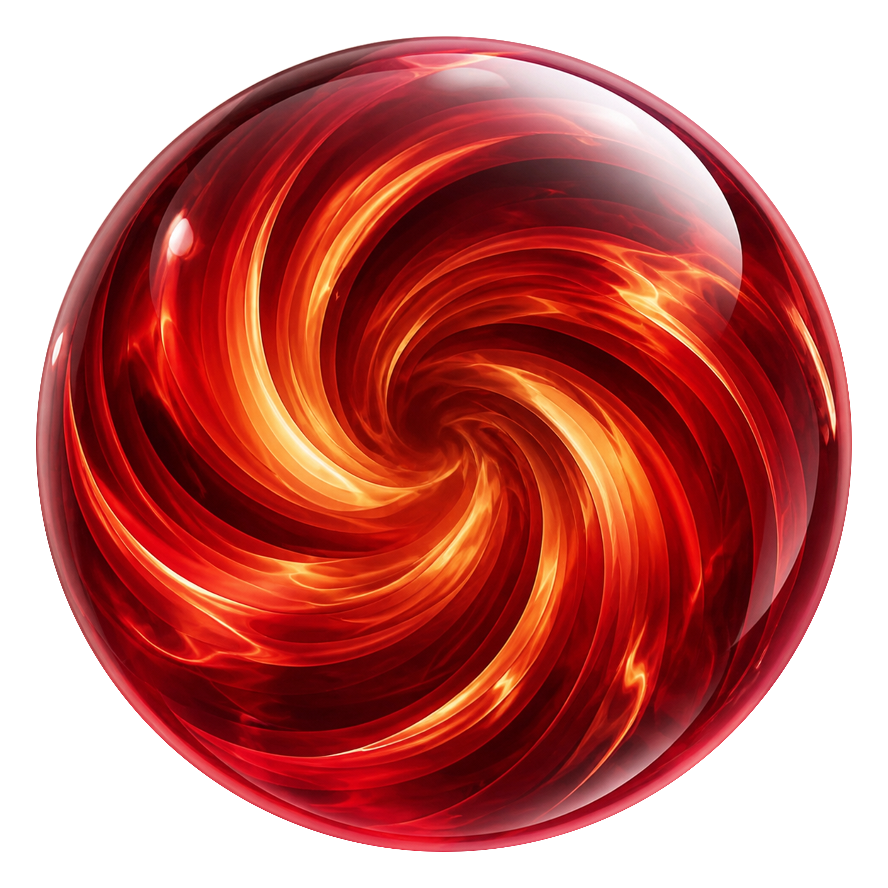

CyberAlchemy
Building the language for systems that build systems.

Cover study · focused refinement
The orb owns the complete right edge at lower opacity. A protected left column keeps the title intact and gives both elements room to carry weight.
Building the language for systems that build systems.

The orb becomes a crown above the identity. The centered ceremony remains, but a clear threshold keeps image and language apart.
Building the language for systems that build systems.
The orb is treated as an artifact in its own chamber. A strong vertical axis gives the title equal weight without allowing either side to collide.
Building the language for systems that build systems.
The identity occupies a quiet inscription field while the orb rises from a separate lower horizon. It feels iconic without becoming a watermark.
Building the language for systems that build systems.